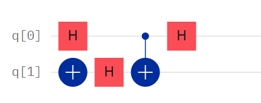
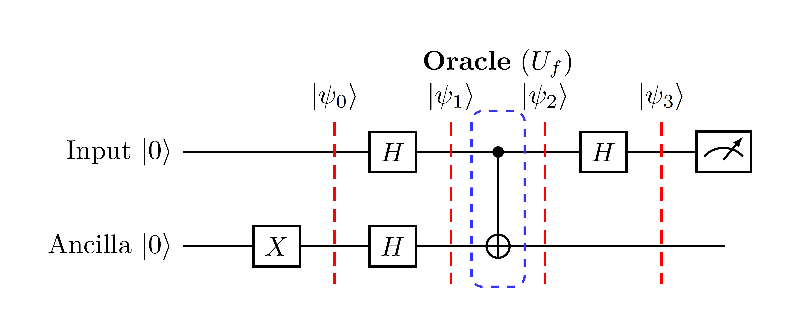

Oracles, Phase Kickback, and the dawn of Quantum Advantage
In the previous labs, we focused on the physics of computation: manipulating qubits and creating entanglement. Now, we elevate our perspective to computer science. We will implement Deutsch's Algorithm. While solving a highly abstract problem, it is mathematically profound: it is the simplest algorithm that unequivocally proves a quantum computer can solve a specific problem with fewer operational steps than any classical machine allowed by the laws of physics.
In computational complexity, an Oracle is a "Black Box". Suppose we have a function $f(x)$. We can give the Oracle an input $x$, and it computes the output $f(x)$. Crucially, we cannot inspect its internal circuitry or reverse-engineer its code.
In quantum computing, the oracle is an operation $U_f$ that acts on two registers (the input $|x\rangle$ and an ancilla workspace $|y\rangle$). To ensure the operation is reversible (a strict requirement for quantum gates), it is defined mathematically as:
(Where $\oplus$ represents addition modulo 2, or the XOR operation).
Normally, a CNOT flips the target. But observe $q_1$: it remains strictly $|-\rangle$.
Why? Because applying an X gate to $|-\rangle$ yields $-|-\rangle$ (it is an eigenstate
with eigenvalue -1).
This global minus sign is factored out and "absorbed" by the $|1\rangle$ component of
the control qubit $q_0$. You will see the dot for $q_0$'s $|1\rangle$ state turn Red. The action of the target kicked back
to alter the phase of the control!

Notice how the target must be meticulously prepared in the $|-\rangle$ state for the kickback to occur.
The Problem: We are given an unknown function $f(x) \in \{0,1\} \to \{0,1\}$.
This function belongs to one of two rigid categories:
A classical computer must query the function twice ($x=0$ and $x=1$) to compare the outputs. Deutsch's Algorithm solves this with exactly 1 query to the quantum oracle.

We will now construct the circuit. We will use a simple CNOT gate as our simulated Oracle. A CNOT acts as $f(x) = x$. Since $f(0)=0$ and $f(1)=1$, this represents a Balanced function.
from qiskit import QuantumCircuit
from qiskit_aer import AerSimulator
# 1. Setup: 1 Input Qubit (q0), 1 Ancilla Qubit (q1), 1 Classical Bit
qc = QuantumCircuit(2, 1)
# 2. State Preparation
qc.x(1) # Ancilla initialized to |1> BEFORE the Hadamard
qc.h(0) # Input to |+>
qc.h(1) # Ancilla to |-> (Ready for Phase Kickback)
qc.barrier() # Barrier prevents Qiskit from auto-optimizing gates
# 3. The Oracle: Balanced function (CNOT)
qc.cx(0, 1)
qc.barrier()
# 4. Interference and Measurement
qc.h(0) # Mix the states to extract the relative phase
qc.measure(0, 0) # Read the result of the input qubit
# 5. Execution
simulator = AerSimulator()
job = simulator.run(qc, shots=1000)
print(f"Algorithm Output: {job.result().get_counts()}"){'1': 1000}.
qc.cx(0, 1) line
(making it
an Identity Oracle, $f(x)=0$), the function becomes Constant. The output will perfectly flip
to
{'0': 1000}.
You might realistically think: "Who cares if a 1-bit function is constant or balanced? I could have checked that classically in a microsecond."
You are right. Deutsch's algorithm has no direct commercial application. However, it is the theoretical foundation of everything that follows. It proves that quantum interference can change the algorithmic scaling of a problem from $\mathcal{O}(N)$ to $\mathcal{O}(1)$.
In the Query Model of computation (QC12), what is the primary metric used to evaluate the efficiency of a quantum algorithm?
In the mathematical evolution of Deutsch's algorithm, what physical phenomenon causes the value of $f(x)$ to be encoded directly into the phase of the input qubit?
You run Deutsch's algorithm on a mysterious Oracle and measure the input qubit at the very end. The result is 100% certainty of reading "0". According to the interference step, what did you just prove about the hidden function?